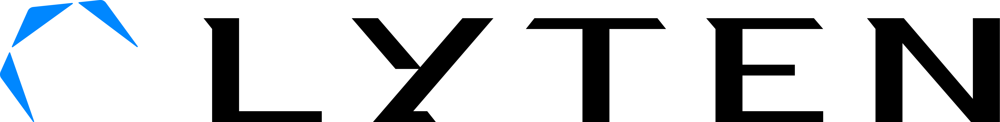

Manufacturing Execution System
Elinext supported an industrial MES with long-running teams and complex integration work across manufacturing environments.
Read the case study
Prepared for Jeffrey H. Xu
Saw Lyten is hiring a Backend Engineer. That usually means the roadmap needs backend support now, while the full-time search still takes time.
Why we're here
Lyten Battery Systems is moving into a bigger scale-up phase. A short backend squad can protect delivery while your team keeps hiring.
That role points to a scale-up moment, not just one missing seat. Lyten is moving Battery Systems from cells and UAV packs into larger systems, while Northvolt assets add Sweden, Poland, and R&D labs. That adds more test data, equipment data, and customer spec work. If backend capacity stays thin, process teams wait for reports, APIs, and stable release paths. Jeffrey's materials team then loses time on handoffs instead of yield, quality, and scale.
Map the Battery Systems request flow against lab, pilot-line, and customer data. Turn spec requests, samples, test reports, and approvals into one clear backend path.
Use the Lighthouse finding on layout shift as a quick public-page fix. Lock image dimensions and remove render blockers before deeper portal work.
Engagement model: a dedicated backend and data squad under Lyten's Product Owner or PM, built for a six-week pilot.
Trace sample requests, battery test outputs, and manufacturing data into backend services and reporting needs.
Clear API, data model, and integration work that is blocked by the open Backend Engineer role.
Set CI checks, observability, and cloud deploy patterns for production-grade battery data services across teams.
Build dashboards or exports that help process teams see yield, quality, and capacity signals faster.
Relevant stack: Java/Spring, Python, Node.js, PostgreSQL, Docker, AWS or Azure.
Elinext is a full-cycle software development company founded in 1997, with about 700 in-house specialists and no freelancers. For Lyten, the fit is industrial software, backend teams, DevOps, QA, and data work under your Product Owner. We have delivered for Siemens, Broadcom, Volkswagen, TRUMPF, TUI, and Parrot, and we work under ISO 9001 and ISO 27001. The same dedicated-squad model gives Jeffrey bridge capacity while the permanent Backend Engineer search continues. It keeps ownership inside Lyten and adds delivery speed now.
Elinext supported an industrial MES with long-running teams and complex integration work across manufacturing environments.
Read the case study
Elinext built software that takes machine data from factory equipment and turns it into operational insight.
Read the case study